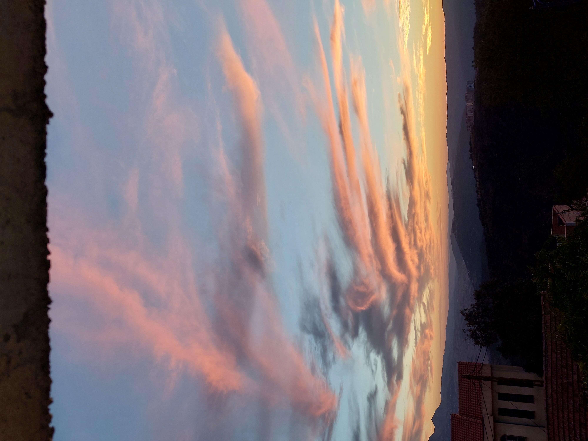

Au bord de l’indicible
Les mots arrivent toujours
après le monde.
Ils ramassent des éclats
sans refaire la lumière.
Je cherche une phrase
qui n'efface rien.
Mais chaque syllabe
choisit déjà son absence.
Le réel déborde
des pages ouvertes.
Il glisse entre les lignes
comme une eau vive.
Le poème tend les mains
vers l'invisible.
Il ne saisit
qu'une poignée de souffle.
Nommer une chose,
est-ce vraiment la connaître ?
Ou seulement lui offrir
un miroir imparfait ?
Les dictionnaires empilent
des définitions.
Le silence,
lui,
garde encore ses secrets.
Parfois un seul mot console
davantage qu'un discours.
Parfois mille phrases échouent
devant une larme.
La langue construit
des ponts fragiles.
Elle invente aussi des murs
sans le vouloir.
Chaque voix porte
son accent de vérité.
Chaque silence possède
sa propre grammaire.
Le poète avance
parmi les hésitations.
Il écoute les blancs
autant que les vers.
Il sait que l'inexprimable veille
derrière chaque image.
Le monde résiste
aux métaphores.
Pourtant elles éclairent
des chemins inconnus.
Les mots tombent,
se relèvent,
recommencent.
Ils apprennent l'humilité
face au réel.
Écrire n'est pas
posséder le monde.
C'est accepter
de l'approcher
sans le capturer.
Chaque poème demeure
une question ouverte.
Une tentative
contre l'oubli.
Une respiration
dans le vacarme
des certitudes.
Le langage vacille,
mais il avance.
Il trébuche sur l'indicible
sans renoncer.
Car même imparfaits,
les mots cherchent la rencontre.
Ils ouvrent des fenêtres
là où les murs se dressent.
Et leur doute devient parfois
la plus juste des vérités.
Djamel Metref
At Yenni le 6 Août 2026
← Tous les poèmes